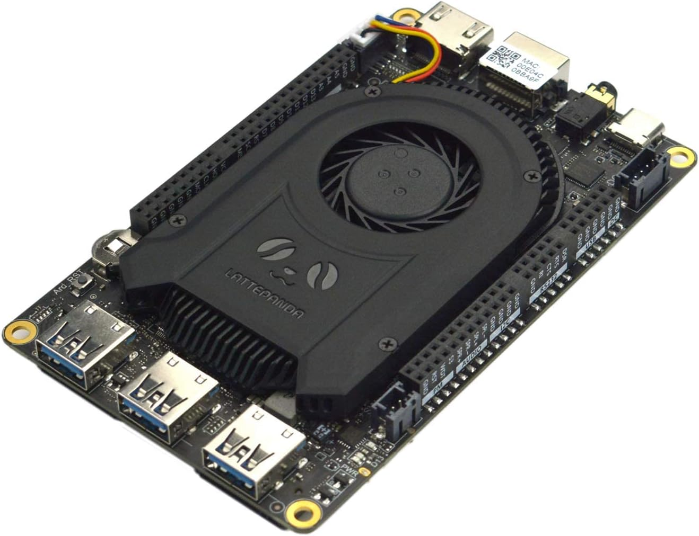

The LattePanda Delta is a high-performance, pocket-sized single-board computer (SBC) designed by DFRobot. Unlike most ARM-based single-board computers (such as the Raspberry Pi), the LattePanda Delta features an x86 Intel architecture processor. This allows it to run a full, standard version of desktop Windows 10, Windows 11, or mainstream Linux distributions right out of the box.
